Sep 25, Oct 9, Nov 13 (on-line)
Oct 12 - 16 on-site @ Uppsala University
From research question to biological insight
More realistic case
More realistic case
Looping back examples:
Diabetes data
faraway R package| Abbreviation | Description |
|---|---|
| id | Subject ID |
| chol | Total Cholesterol [mg/dL] |
| stab.glu | Stabilize Glucose [mg/dL] |
| hdl | High Density Lipoprotein [mg/dL] |
| ratio | Cholesterol / HDL Ratio |
| glyhb | Glycosolated Hemoglobin [%] |
| location | County: Buckingham or Louisa |
| age | age [years] |
| gender | gender |
| height | height [in] |
| weight | weight [lb] |
| frame | frame: small, medium or large |
| bp.1s | First Systolic Blood Pressure |
| bp.1d | First Diastolic Blood Pressure |
| bp.2s | Second Systolic Blood Pressure |
| bp.2d | Second Diastolic Blood Pressure |
| waist | waist [in] |
| hip | hip [in] |
| time.ppn | Postprandial Time [min] when labs were drawn |
Diabetes data
BMI>30 indicating if BMI is over 30 (1) or no (0)Rows: 6
Columns: 21
$ id <int> 1000, 1001, 1002, 1003, 1005, 1008
$ BMI <dbl> 22.09, 36.92, 47.95, 18.53, 27.52, 26.39
$ `BMI>30` <fct> 0, 1, 1, 0, 0, 0
$ chol <int> 203, 165, 228, 78, 249, 248
$ stab.glu <int> 82, 97, 92, 93, 90, 94
$ hdl <int> 56, 24, 37, 12, 28, 69
$ ratio <dbl> 3.6, 6.9, 6.2, 6.5, 8.9, 3.6
$ glyhb <dbl> 4.31, 4.44, 4.64, 4.63, 7.72, 4.81
$ location <fct> Buckingham, Buckingham, Buckingham, Buckingham, Buckingham, B…
$ age <int> 46, 29, 58, 67, 64, 34
$ gender <fct> female, female, female, male, male, male
$ height <dbl> 1.57, 1.63, 1.55, 1.70, 1.73, 1.80
$ weight <dbl> 54.45, 98.10, 115.20, 53.55, 82.35, 85.50
$ frame <fct> medium, large, large, large, medium, large
$ bp.1s <int> 118, 112, 190, 110, 138, 132
$ bp.1d <int> 59, 68, 92, 50, 80, 86
$ bp.2s <int> NA, NA, 185, NA, NA, NA
$ bp.2d <int> NA, NA, 92, NA, NA, NA
$ waist <dbl> 0.7366, 1.1684, 1.2446, 0.8382, 1.1176, 0.9144
$ hip <int> 38, 48, 57, 38, 41, 42
$ time.ppn <int> 720, 360, 180, 480, 300, 195Diabetes data + 1000 genes
In addition, we simulated expression levels for 1,000 genes, with a subset of known obesity-associated genes simulated as up-regulated.
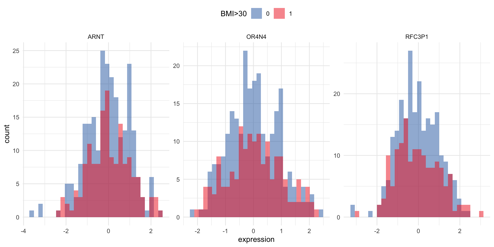
| Step | What it’s about | What to think about | |
|---|---|---|---|
| 🧼 | Data Cleaning | Fixing errors, missing values, and inconsistencies | Is the data valid, complete, and reliable? |
| ⚙️ | Data Pre-processing | Preparing clean data for modeling | Is the data in a model-friendly format? |
| 🔢 | Variable (feature) Transformations | Changing variable scale or representation | Is the representation appropriate for the method and its assumptions? |
| 🛠️ | Feature Engineering | Creating new informative variables from existing ones | Can we create features that improve signal or interpretability? |
Where does this step belong?
🧼 Data Cleaning • ⚙️ Pre-processing • 🔢 Variable Transformation • 🛠️ Feature Engineering
weight but drop waist (⚙️)scaling & normalization
Normalization: rescaling or transforming data to make values more comparable or suitable for analysis, often by putting them on a common scale or removing technical differences. Often changing observations to remove skewness.
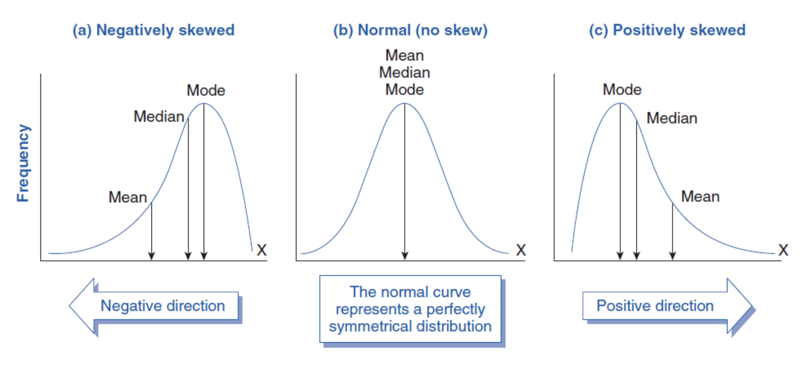
Source: https://www.biologyforlife.com/skew.html
common transformations
square-root for moderate skew
log for greater skew
inverse for severe skew
dummy variables
weight with three possible vales (underweight, healthy, overweight) can be transformed into two binary variables: “is_healthy”, and “is_overweight”, where the value of each variable is 1 if the observation belongs to that category and 0 otherwise.| id | weight | is_healthy | is_overweight |
|---|---|---|---|
| 902 | Overweight | 0 | 1 |
| 911 | Healthy | 1 | 0 |
| 916 | Healthy | 1 | 0 |
| 1171 | Underweight | 0 | 0 |
| 1185 | Healthy | 1 | 0 |
one-hot encoding
| id | weight | is_underweight | is_healthy | is_overweight |
|---|---|---|---|---|
| 902 | Overweight | 0 | 0 | 1 |
| 911 | Healthy | 0 | 1 | 0 |
| 916 | Healthy | 0 | 1 | 0 |
| 1171 | Underweight | 1 | 0 | 0 |
| 1185 | Healthy | 0 | 1 | 0 |
missing data
Rubin’s (1976) missing data classification system
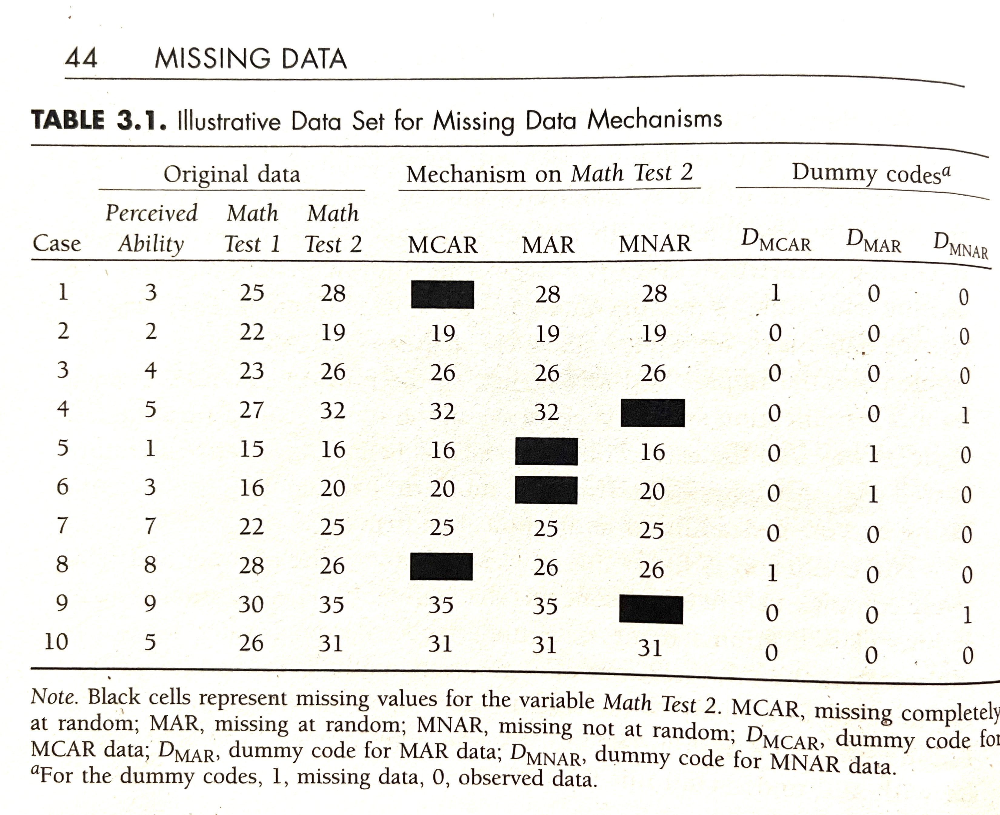
“Missing Data” (2008)handling imbalanced data
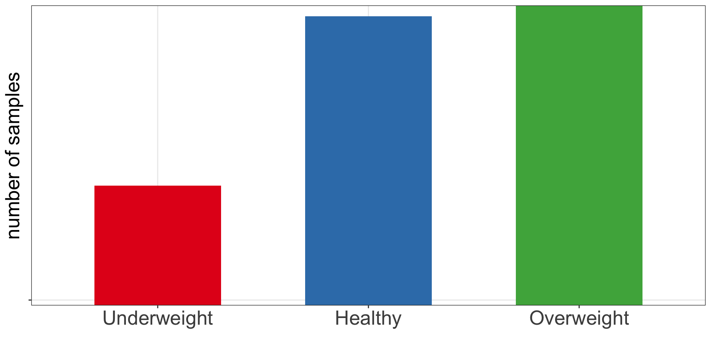
EDA is the process of visually and statistically exploring data to:
EDA helps us understand what the data can support, choose appropriate methods, and detect problems before modeling.
Using our dataset, we can:
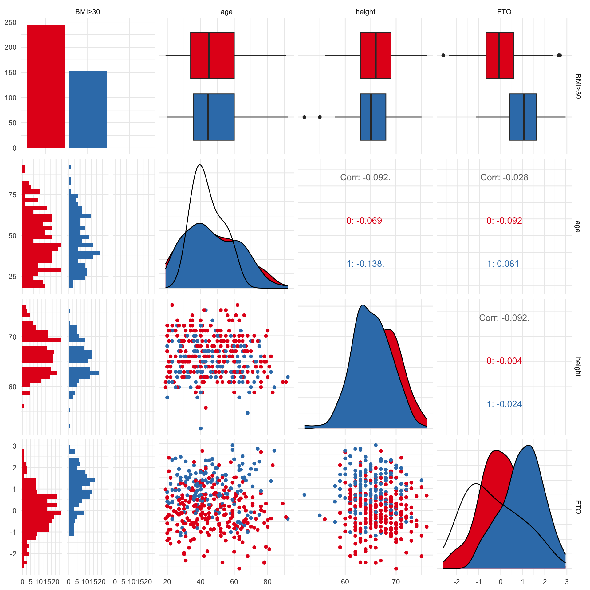
| Goal | Approach | Typical question |
|---|---|---|
| Understand relationships or effects | Statistical inference | Is X associated with Y? How large is the effect? |
| Predict an outcome for new observations | Supervised learning | Can we predict Y from X? |
| Discover patterns or structure | Unsupervised learning | Are there groups, gradients, or other structure in the data? |
Inferential statistics allow us to draw conclusions about a population from a sample, while quantifying uncertainty and testing hypotheses about relationships or differences.
Common inferential methods:
These tests help answer: “Is the observed relationship likely to exist beyond our data?”
Simple linear expression
Call:
lm(formula = BMI ~ FTO, data = data)
Residuals:
Min 1Q Median 3Q Max
-13.9652 -4.4319 -0.4238 2.6867 22.6768
Coefficients:
Estimate Std. Error t value Pr(>|t|)
(Intercept) 28.0064 0.3239 86.475 < 2e-16 ***
FTO 2.2651 0.2868 7.897 2.86e-14 ***
---
Signif. codes: 0 '***' 0.001 '**' 0.01 '*' 0.05 '.' 0.1 ' ' 1
Residual standard error: 6.147 on 395 degrees of freedom
(6 observations deleted due to missingness)
Multiple R-squared: 0.1363, Adjusted R-squared: 0.1342
F-statistic: 62.36 on 1 and 395 DF, p-value: 2.863e-14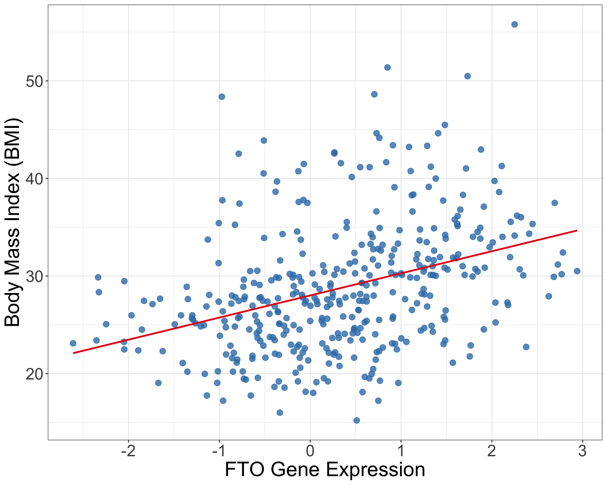
Multiple regression
Call:
lm(formula = BMI ~ FTO + age + gender, data = data)
Residuals:
Min 1Q Median 3Q Max
-12.5894 -3.9624 -0.3899 2.5663 21.6297
Coefficients:
Estimate Std. Error t value Pr(>|t|)
(Intercept) 29.011464 0.940338 30.852 < 2e-16 ***
FTO 2.145884 0.279805 7.669 1.37e-13 ***
age 0.007214 0.018346 0.393 0.694
gendermale -3.077730 0.610312 -5.043 7.02e-07 ***
---
Signif. codes: 0 '***' 0.001 '**' 0.01 '*' 0.05 '.' 0.1 ' ' 1
Residual standard error: 5.972 on 393 degrees of freedom
(6 observations deleted due to missingness)
Multiple R-squared: 0.1888, Adjusted R-squared: 0.1826
F-statistic: 30.5 on 3 and 393 DF, p-value: < 2.2e-16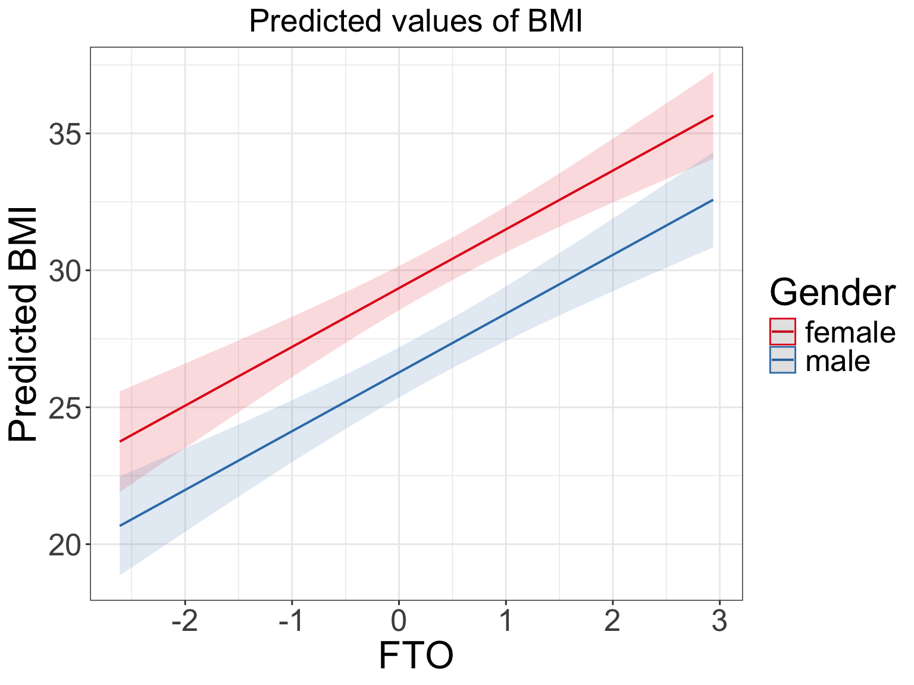
Logistic regression
Call:
glm(formula = `BMI>30` ~ FTO, family = binomial, data = data)
Coefficients:
Estimate Std. Error z value Pr(>|z|)
(Intercept) -1.0220 0.1469 -6.956 3.49e-12 ***
FTO 1.1560 0.1406 8.220 < 2e-16 ***
---
Signif. codes: 0 '***' 0.001 '**' 0.01 '*' 0.05 '.' 0.1 ' ' 1
(Dispersion parameter for binomial family taken to be 1)
Null deviance: 492.71 on 368 degrees of freedom
Residual deviance: 397.93 on 367 degrees of freedom
AIC: 401.93
Number of Fisher Scoring iterations: 4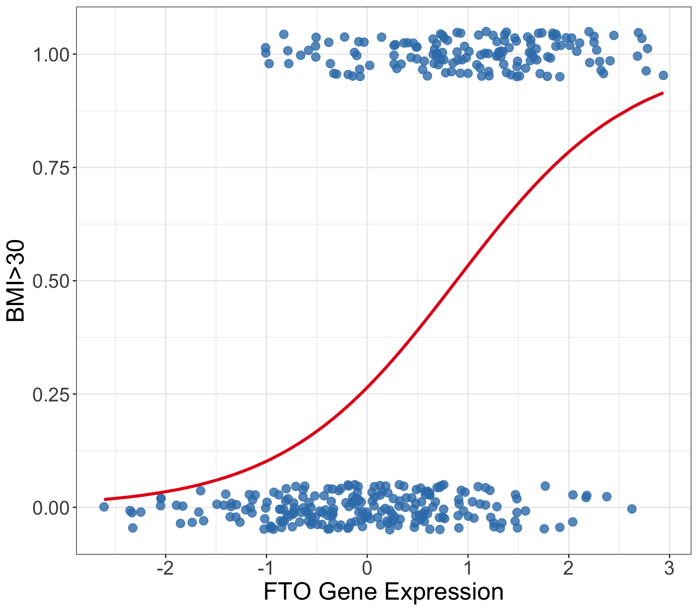
classification and regression
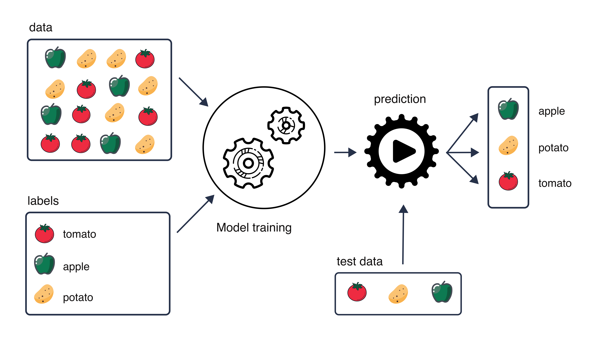
A good predictive model should perform well on new, unseen data.
The goal is not to optimize training performance — it is to perform well on unseen data.
Different algorithms learn the relationship between features and a known outcome in different ways.
mixOmics)Different algorithms learn the relationship between features and a known outcome in different ways.
mixOmics)Starting from linear regression
Linear regression models an outcome as a combination of predictors:
\[ y = \beta_0 + \beta_1x_1 + \beta_2x_2 + \cdots + \beta_px_p + \varepsilon \]
The coefficients are estimated by minimizing the Residual Sum of Squares (RSS):
\[ RSS = \sum_{i=1}^{n}(y_i-\hat y_i)^2 \]
With many predictors, especially correlated ones:
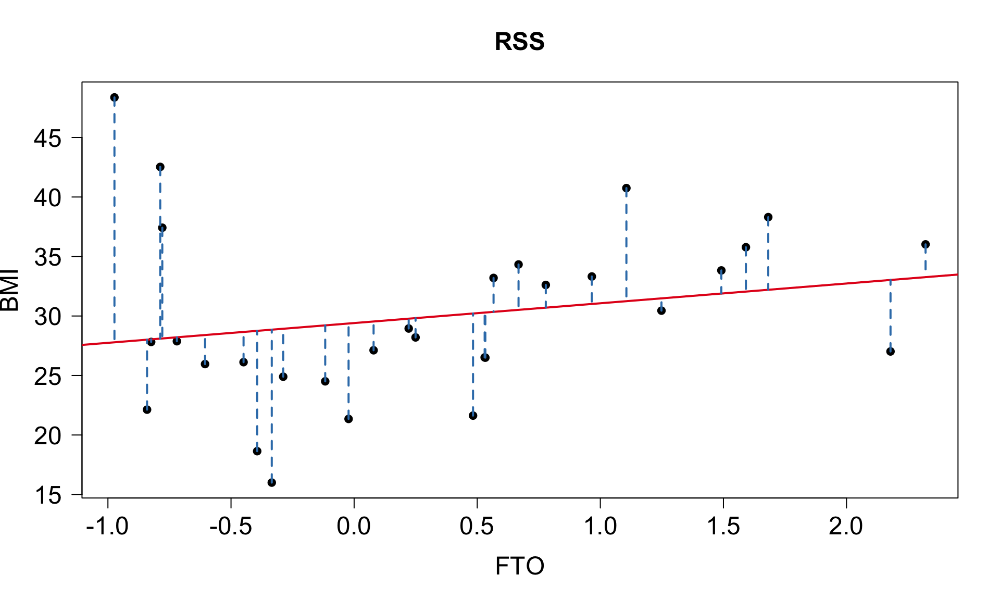
Ordinary regression minimizes prediction error on the training data without constraining model complexity.
Lasso (Least Absolute Shrinkage and Selection Operator) regularization
Lasso modifies the regression objective by adding a penalty on the size of the coefficients:
\[
\text{Minimize: } RSS + \lambda \sum_{j=1}^{p} |\beta_j|
\]
λ (lambda) is the regularization parameter:
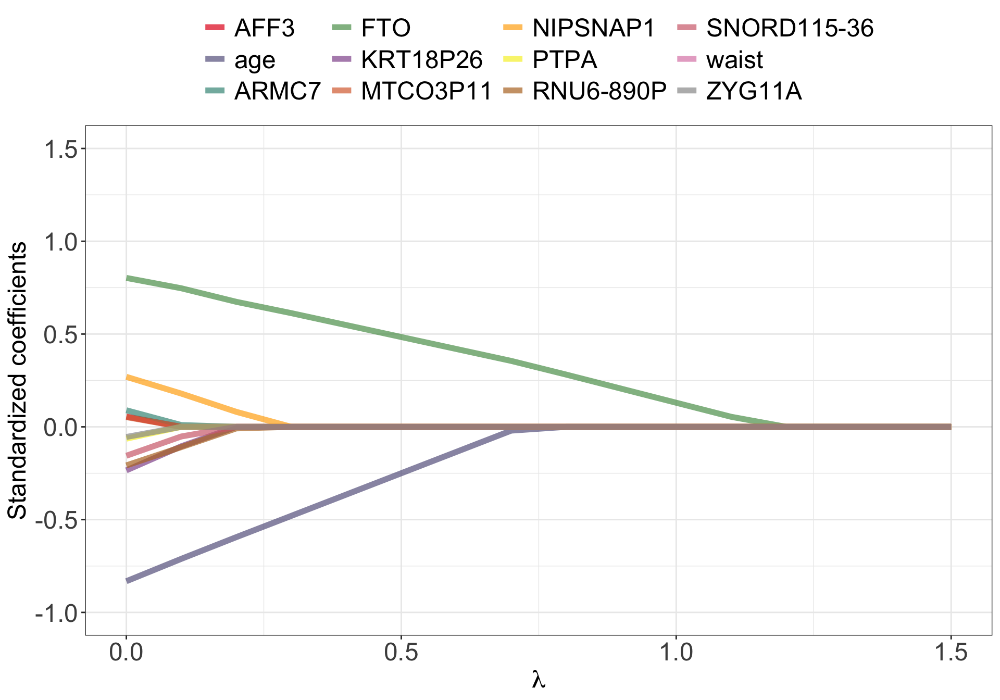
Common strategies for estimating performance on unseen data
🧪 Train / Validation / Test
Split data once:
🔁 k-Fold Cross-Validation (e.g. k = 5)
Rotate the validation fold:
🔁🔁 Repeated k-Fold Cross-Validation
🧍 Leave-One-Out CV (LOOCV)
One observation is held out at a time:
The test set is reserved for final evaluation and should not be used for model tuning.
prediction error
For regression tasks, predictions are numeric:
\[ \hat{y}_i \] We compare each observed value with its predicted value:
\[ e_i = y_i - \hat{y}_i \]
Common regression metrics
Mean Absolute Error
\[ MAE = \frac{1}{N}\sum_{i=1}^{N}|y_i - \hat{y}_i| \]
Average absolute prediction error, in the same units as the outcome.
Root Mean Squared Error
\[ RMSE = \sqrt{\frac{1}{N}\sum_{i=1}^{N}(y_i - \hat{y}_i)^2} \]
Also in the same units, but gives more weight to large errors.
Classification predictions
Many classifiers do not directly give a class label.
They first give a score or predicted probability:
\[ P(Y = \text{positive}) \]
Threshold-based metrics
After choosing a threshold, we compare predicted classes with true labels.
| Predicted positive | Predicted negative | |
|---|---|---|
| Actual positive | TP | FN |
| Actual negative | FP | TN |
ROC curve, PR curve
Changing the threshold changes the classifier performance.
The ROC curve shows this trade-off across thresholds:
\[ \text{sensitivity vs. } 1 - \text{specificity} \]
\[ \text{AUC} = \text{overall ability to distinguish classes} \]
The PR curve shows the trade-off betwee precision and recall.
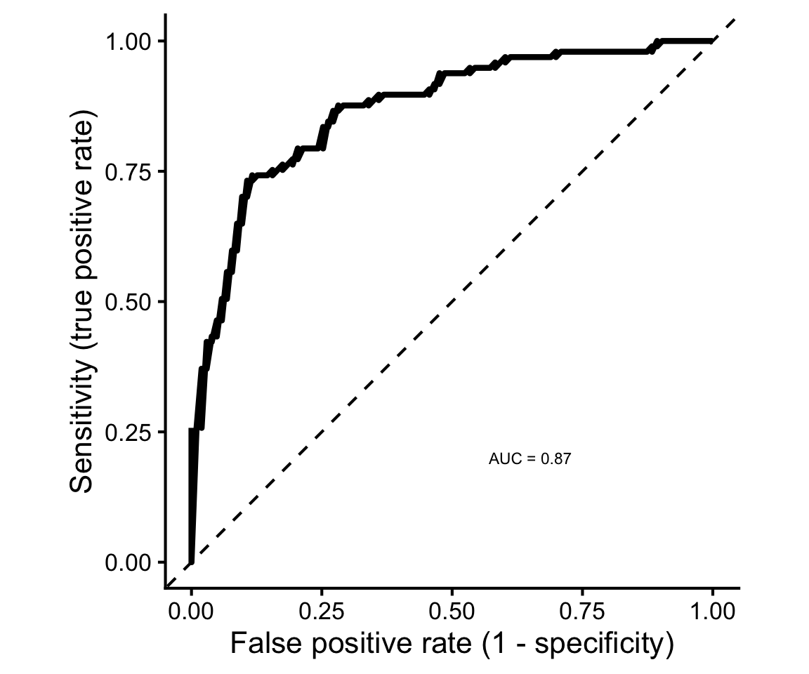
When one outcome class is much more common than the other
For example:
A model predicting everyone as negative would achieve 95% accuracy — but detect none of the positive cases.
Choose evaluation metrics that reflect the problem you actually care about — not just overall accuracy.
Data leakage occurs when information unavailable during real prediction influences model training. e.g.
Any preprocessing step that learns from the data must be fitted on the training data only to avoid data leackage.
Finding structure in data without a known outcome
In unsupervised learning, there is no target variable to predict.
Instead, we ask questions such as:
Common approaches
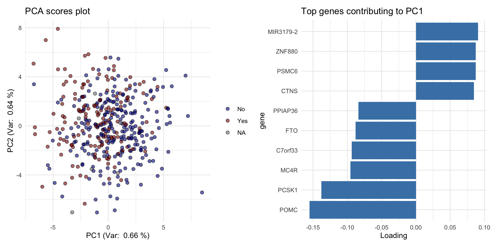
Unsupervised learning is about structure discovery, not prediction of a known outcome.
deployment
A model is more useful when others can understand, reproduce, and reuse it.
README.md explaining what the project does and how to run itCITATION.cff tells users how to cite the project
FAIR = Findable • Accessible • Interoperable • Reusable
End-to-end ML is not just fitting a model — it is the whole workflow from question to reusable result.
Think about your current or planned research project:
Tell your group about. When you’re talking, somone should take notes. And before you move to the next person, tag the answer. Possible tags are below.
#data-cleaning; #data-preprocessing; #missing-data; #variable-transformation; #feature-engineering; #data-splitting; #classification; #regression; #dimensionality-reduction; #clustering; #model-evaluation; #model-interpretation; #documentation; #version-control; #model-sharing; #R; #python
Example
Olga
By Oct 2nd, 23:59
Fill in the excel form (will share link in the email).
Machine Learning for Life Sciences (ML4LS)